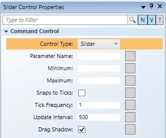

Draw a Slider Command Control
The following instructions are just one example of how a slider command can be drawn and used to for commanding.
- You have reviewed or completed the Preparing to Create Controls to Command Objects workflow.
- To create a new command control element on a graphic, from the File menu, select New Symbol
 .
. - From the Home tab, in the Elements group, click Command Control
 , and draw a wide and short rectangle on the canvas.
, and draw a wide and short rectangle on the canvas.
NOTE: The width of the slider determines the most left and most right position of the thumb during run time. - From the Property View (Command Control Properties), expand the Command Control properties, and from the Control Type drop-down menu, select Slider.

- The text in the rectangle on the canvas changes to Slider
. - (Optional) Select the Slider control on the canvas, and from the Home tab, from the Brushes group, select a color for the background. This option makes the extents of the Slider visible; therefore, it is easier to see and configure the Slider during design.
- NOTE: After editing is finished, the background of the slider control must be set back to No Brush, so that the elements that make up the visual representation display.
- To create the Slider thumb, from the Elements group, select a drawing or image element to draw or depict a thumb.
- For this example, from the Elements group, click Path
 , and draw an upside down triangle at the top and center of the command control. Next, from the Brushes group view, select the Fill
, and draw an upside down triangle at the top and center of the command control. Next, from the Brushes group view, select the Fill  drop-down menu, and from the color palette, select #FFFFFFFF (white). The thumb must have a Fill applied in order to be selected at runtime.
drop-down menu, and from the color palette, select #FFFFFFFF (white). The thumb must have a Fill applied in order to be selected at runtime.
NOTE: At runtime, the thumb snaps to the correct X coordinate along the Slider; however, the Y coordinate remains the same. Therefore, draw the thumb close to the top of the Slider. Also, if you rotate the slider 90*, so that the slider slides up-and-down, instead of left-and-right, the thumb snaps to the Y coordinate and the X coordinate stays the same. - NOTE: To save space, you can also draw the Thumb on top of the Slider control to take up less space.
- In the Element Tree, press the CTRL key, and select the Slider element and the Path element, then right-click and from the Group menu that displays, select Join or Leave Command Control.
- In the Element Tree, the Path now represents the thumb (child) of the Slider command control.
- You have drawn the foundation for the Slider command control.